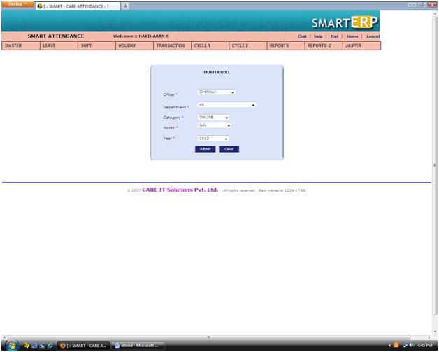
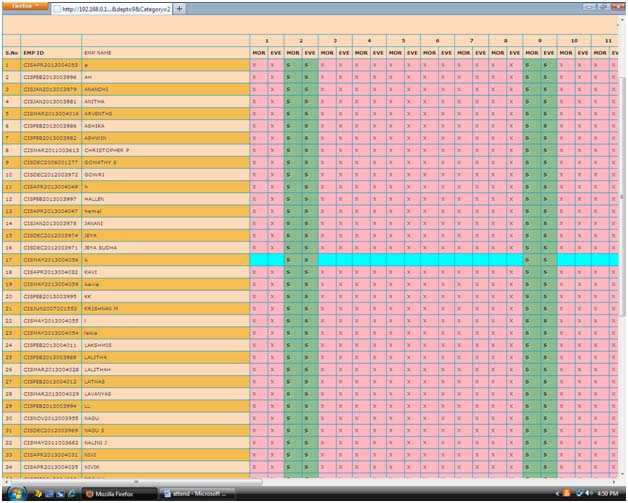
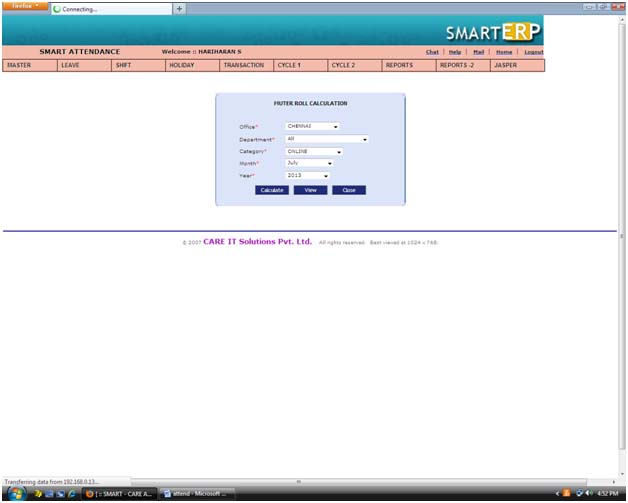
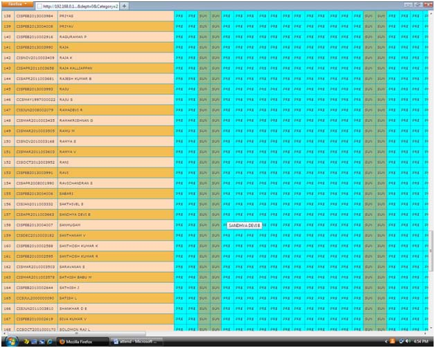
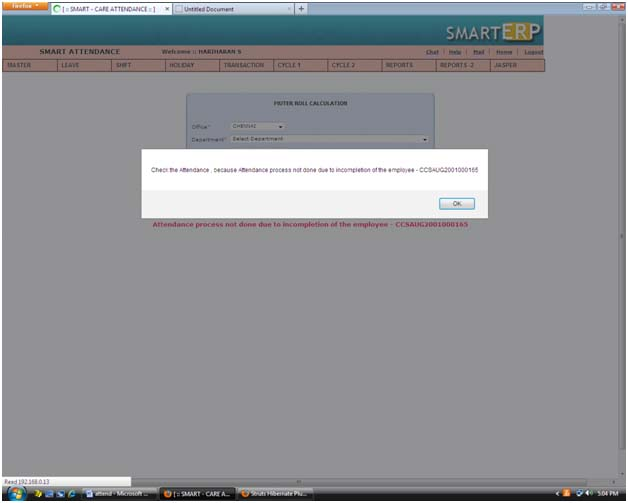
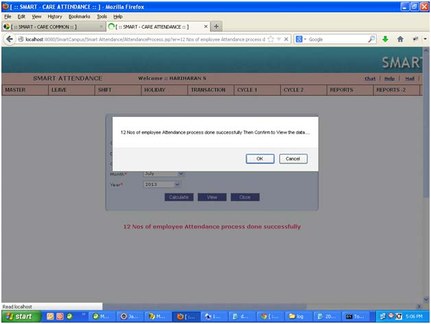
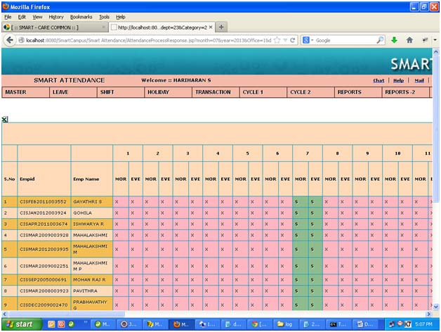
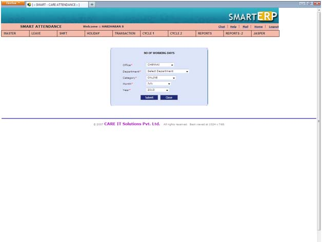
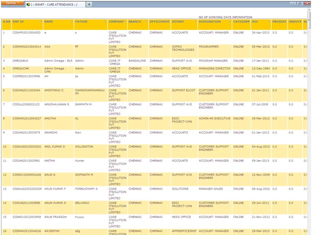

|
||
Cycle-1 |
||
Register |
||
| To view attendance register information by using this page | ||
| Select office, department, category, month, year | ||
| The * mark symbol are mandatory. | ||
| The * mark field validate when click the submit button. | ||
| Click the submit button. | ||
|  | ||
| The attendance register shows the present, leave, absent, leave, late, holiday, Sunday and etc | ||
|
||
|  | ||
Process |
||
| To view attendance process information by using this page. | ||
| Select office, department, category, month, year | ||
| The * mark symbol are mandatory. | ||
| The * mark field validate when click the submit button | ||
| Click the view button | ||
|  | ||
Process view |
||
| The screen display no of present, on duty, Sunday, holiday, leave, absent, late, permission and extra days | ||
| The late & permissions are calculated in common settings | ||
| For e.g the attendance setup 0.5 day salary deduct for 4 days late | ||
|
||
|  | ||
Process calculation |
||
| If any of employee attendance process isn’t completed it’s show alert as below screen | ||
|  | ||
| If all employee’s attendance process is completed it show alert as below screen follow that it redirect to report page | ||
|  | ||
|  | ||
No of working days |
||
| If we want to look at no of working days for a staff by using this page | ||
| Select office, department, category, month, year | ||
| The * mark symbol are mandatory | ||
| The * mark field validate when click the submit button | ||
| Click submit button | ||
|  | ||
| This is no of working days for month & year | ||
| We can export to excel, pdf, and xml files | ||
|  |